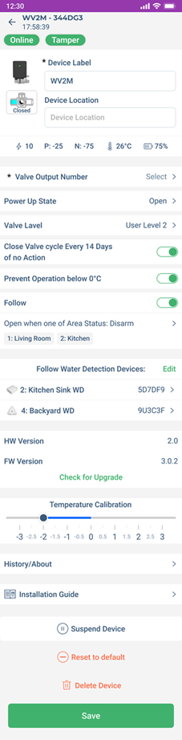
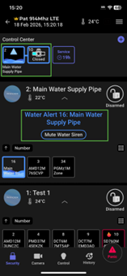

Configuring the WV2M
To configure the WV2M settings:
- When in the Hardware, tap the WV2M device.
- On the page that opens, enter the necessary details for the parameters and then tap Save. For details see the following table.
| Parameter | Description |
|---|---|
| Device Details | Enter a name for the zone. |
| Valve Output Number | Assign a number to the valve. |
| Power Up State | Select the default state of the valve: - Open - Close - No Change |
| Valve Level | Choose one of the following options: - User Level 1 (All Permitted) - The installer, site owner, or site master can activate the water valve. A user can activate it only if the PGM Scenario Activation option is enabled in their profile. - User Level 2 – The installer, site owner, or site master can activate the water valve. A user can activate it only if both PGM Scenario Activation and Restricted PGM/scenario options are enabled in their profile. |
| Close Valve Cycle Every 14 Days of no action | When enabled, the system automatically cycles (closes and reopens) the valve if it remains open for 14 days without any user action, preventing sticking or malfunction. |
| Prevent Operation below 0°C | Prevents the valve from operating when the temperature drops below 0°C to avoid freezing issues. |
| Follow | When enabled, the valve will operate according to the area status, or the configured schedule. |
| Follow Water Detection Devices | Select water detection devices whose status the valve will follow. |
| Temperature Calibration | Allows manual calibration of the device's reported temperature to match the actual ambient temperature. |
| Suspend Device | Disables monitoring of the device in the system. |
| Reset to Default | This will reset the device to the factory default settings. ** note ** Only an installer can reset the device. |
| Delete Device | This option deletes the device from the system completely. After deletion, the system generates a push notification only if the owner registration is complete, not during installation. ** note ** Only an installer can delete the device. |

When a water leak is detected by a water detector assigned to the WV2M, an alert appears in the Control Center.
